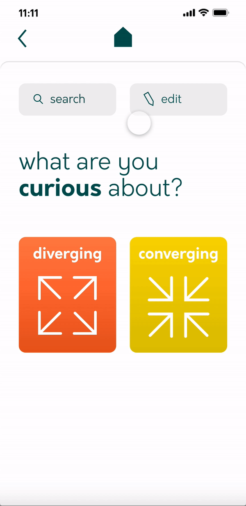

As a technique of learning the creative thinking process, I created a prototype of an app displaying different diverging and converging rules and techniques.


For this task, I used Adobe XD. This was my first time creating a whole prototype with it, and I have learned a lot through this project!
The prototype includes the rules and techniques of diverging and converging, as well as some additional information on the techniques. I also included an option to edit the information and add to it.


The app was very helpful to learn both about creative thinking and also creating prototypes. It taught me to use Adobe XD more intuitively.